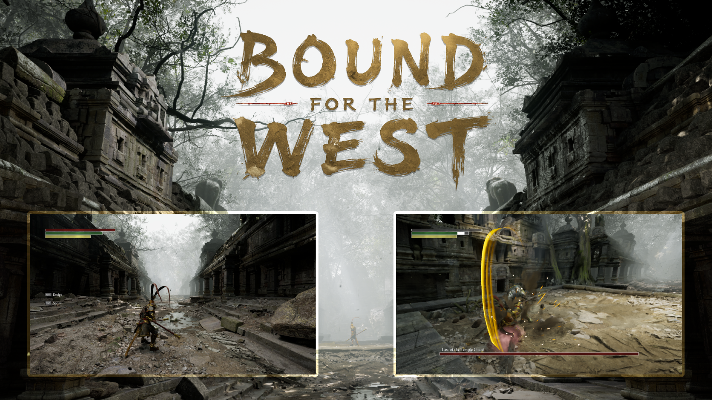

01 / GAMEBound for the West
A fantasy action role-playing game, developed and published independently. This project brings together combat design, surrounding game systems, and realistic asset integration in one playable experience.
Demonstrated Technical Ability
- Designed gameplay and combat systems as part of a cohesive player experience.
- Integrated high-quality third-party assets into a unified game.
- Developed behaviour for a complex and challenging boss fight, requiring encounter logic and state-driven interactions.
- Carried a game from idea through development all the way to publication as a solo creator.
Gameplay designCombat systemAI / Enemy behaviourAsset integrationEnd-to-end ownership
Play / view project